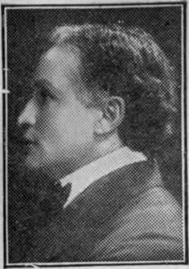

Houdini: The Adventurous Life Of A Versatile Artist
Description
This section is from the book "The Adventurous Life Of A Versatile Artist: Houdini", by Harry Houdini. Also available from Amazon: The Adventurous Life of a Versatile Artist; Houdini.
Houdini: The Adventurous Life Of A Versatile Artist
HARRY HOUDINI, "the World's Handcuff King and amazing Prison Breaker," a title universally and unanimously bestowed upon him, has had a career as adventurous and romantic as the most imaginative 'writer could possibly conjure.
Indeed, this wonderful genius, with a science concerning bolts, bars, locks, and chains that will yet revolutionize the world's methods of safeguarding itself against " the men that prowl in the night," confirms the truth of the ancient adage that "truth is stranger than fiction."
Just remember for a moment that he is the man to whom the shrewdest police, the sharpest detectives, and the most watchful jail wardens look with awe and anxiety.
And they are eminently right in this attitude of disquiet, because they know that buried in the brain of Houdini lies the secret of an unknown power he alone possesses that makes their prisons as powerless as Japanese screens, and renders their multiple-locking handcuffs, leg irons, and all the other prison paraphernalia, no more binding than store twine.
Suppose the innate and inherent integrity of character that Houdini possesses, in common with most men brought up within the circle of a mother's sweet influence, were to be swept aside by the desire for riches not his own. There are many men of many millions to-day whose money is not their own. Suppose he should be captured by a band of desperate men determined to wrest from Houdini this secret worth millions. Suppose a great hypnotist were to obtain dominance over this mystery-enveloped genius and use his baneful powers for evil designs. What then?
A slight knowledge of the marvels Houdini has accomplished mixed with a little imagination would create as many more suppositions of this kind as this book could contain.
But, to be brief, admitting the possibility of the happening of any of these suppositious instances, and you will gam a clear idea of the extraordinary character and quality oi Hou-dini's powers. I't is often the best way to see the full scope uf a cause by carefully ascertaining its effect. This analytical method is equally applicable to Houdini, and. recognizing the harm he would receive were his secrets confided to unworthy hands, you gain an adequately impressive idea of the enormity of responsibility that rests upon him.
Time and time again Houdini has encountered such perils, and in every case he owes his life and the preservation of his secret to his extraordinary acuteness of perception, to his marvelous knowledge of human nature, to his physical prowess that is far greater than appears from a merely superficial inspection, and, last and greatest of all, to the fact that the majority of people witnessing his wonders attribute a quasi , supernatural power.
His press clipping books teems with stories proving the truth of one and all of these assertions. To glance over its pages enchains the reader's attention more closely that if he were absorbing an exciting romance. Accounts of thrilling jail-breaking feats are pasted beside stirring chronicling of handcuff escapes. Columns upon columns of laudatory press criticisms crowd colored cartoons and caricatures that connect Houdini and the great men of Europe in the great political crisis of the last few years.
It being true "that genius is but the capacity for hard work," then it is only a proper introductory tribute to Houdini to state that he is not a mushroomgrowth, sprouting and decaying in a night.
In the development and perfection of his astounding powers over metallic components Houdini has labored as tirelessly as Galileo constructing his astronomical theory, as Stephenson building the first locomotive, as Edison bringing to view the telephone, as Marconi revealing the wireless telegraph.
"How does he do it?" is the universal query.
Of course, he does not, he dare not tell wdiat exertions of power, natural or supernatural, he makes in freeing himself from handcuffs, and in escaping from the dungeons that have held felons until the grave finally hid them forever.
Guesses are multiplied many, many times by all sorts and conditions of men and women. As many theories have been propounded as there are stars in the firmament. Some say he slips out of handcuffs like an eel slipping through an amateur fisherman's fingers. Others say he manipulates cell locks by muscular magnetism. A third class declares that he squeezes himself through bars of cells. Still more say spirits aid him in hU escapes. And so, ad infitum.
Suffice it *is to say that Houdini actually does all that the newspapers credit him doing.
He was born April 6th, 1874, in Appleton, Wis., and a little calculation will show that he is still far from the meridian of lite. From the beginning he showed an insight into mechanics and mechanism that may be compared with the early endeavors of other men who have wrought wonders in the name of science. He showed a tendency toward travel, too, and in his ninth year had a brief experience with Jack Hoefler's "five cent" circus in his home town. Then came an apprenticeship as a mechanic, and after an uneventful term with "the tools of trade" Houdini resolved to see the great world with his own eager eyes. So he ran away from home, as so many others have done that in later years attributed their greatness to their early contact with the corrugated side of life. He joined a small circus, and, being exceptionally bright, he soon learned to conduct the Punch and Judy show, to do a ventriloquial act, and also to play clown on the bars. It may be, too, that "he doubled in brass" or played in the band, though he has never said so.
Here began the experiences that quickly ripened Houdini into the World's Handcuff King and Prison Breaker, which he is, has been and always will be. In exploring his wits for exploits to amuse and entertain the audiences, Houdini hit upon the feat of escaping from ropes tied round him in every conceivable way. He became so expert that he eventually offered a challenge of $25 to any one who could tie him so that he could not escape. And he never has lost a cent of the proffered money.
Continue to:
Tags
magic, escapology, Houdini, wizard, escape artist, lock, handcuff